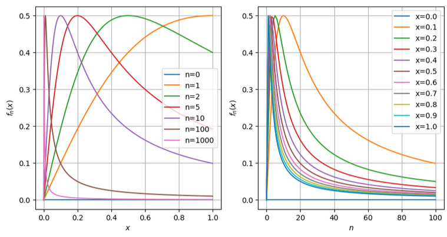

28. Successioni e serie di funzioni reali#
Questa sezione è dedicata alle successioni e serie di funzioni reali.
Vedi anche
28.1. Successioni di funzioni#
Definizione. Una successione di funzioni tra l’insieme \(X\) e l’insieme \(Y\), è una funzione che associa ai numeri interi \(n \in \mathbb{N}\) una funzione \(f_n: X \rightarrow Y\).
Limite di una successione di funzioni. Limite «punto per punto». L’esistenza di un limite (finito?) punto per punto definisice la convergenza puntuale.
28.1.1. Convergenza#
28.1.1.1. Convergenza puntuale#
Definition 28.1 (Convergenza puntuale)
Sia \(\{ f_n \}_{n \in \mathbb{N}}\) una successione di funzioni \(f_n: X \rightarrow \mathbb{R}\). La successione converge puntualmente alla funzione \(f\) se per ogni \(x \in X\) e per ogni \(\varepsilon > 0\) esiste \(N \in \mathbb{N}\) tale che
per tutti gli \(n > N\).
Osservazione. Qui \(N(\varepsilon,x)\).
28.1.1.2. Convergenza uniforme#
Definition 28.2 (Convergenza uniforme)
Sia \(\{ f_n \}_{n \in \mathbb{N}}\) una successione di funzioni \(f_n: X \rightarrow \mathbb{R}\). La successione converge uniformemente alla funzione \(f\) se per ogni \(\varepsilon > 0\) esiste \(N \in \mathbb{N}\) tale che
per tutti gli \(x \in X\) tutti gli \(n > N\).
Osservazione. Qui \(N(\varepsilon)\).
28.1.1.3. Esempio#
The sequence of functions
converges pointwise for every \(x \in D = [0,1]\), while it fails to converge uniformly.
Pointwise convergence. For any fixed \(x \in D\),
and thus the sequence of functions \(f_n(x)\) converges pointwise to \(f(x) = 0\) everywhere in \(D\), i.e. for \(\forall x \in D\).
Uniform convergence. Let’s prove that this sequence of functions doesn’t converge uniformly to \(f(x) = 0\), evaluating the maximum of the difference
With the study of function of \(g(x;n) = \frac{nx}{1+n^2x^2}\), its derivative reads
This becomes zero for \(\overline{x}_n = \frac{1}{n}\) (it’s a maximum) and the function (max distance between \(f_n(x)\) and \(f(x)=0\)) reads
Thus, it’s not possible to find a \(n\) so that \(|y_{n}(x) - f(x)| < \frac{1}{2}\) for \(\forall x \in D\) and \(n > N\).
 |
28.1.2. Proprietà nell’ipotesi di convergenza uniforme#
Sotto opportune ipotesi, la convergenza uniforme permette di invertire l’ordine del limite \(\lim_{n\rightarrow+\infty}\) della successione di funzioni \(f_n(x)\) con gli operatori di limite \(\lim_{x \rightarrow + \infty}\), di derivata e di integrale.
28.1.2.1. Limite#
If the sequence of continuous functions \(f_n(x) \rightarrow f(x)\) uniformly, then \(f(x)\) is continuous as well. This allows interchanging the order of the limits,
Dimostrazione
The first term is treated with uniform convergence. Uniform covergence implies, \(\forall \varepsilon_1 > 0\), \(\exists N_1\) s.t. \(| f_n(x) - f(x) | < \varepsilon_1\) for \(\forall x\), \(\forall n > N_1\).
the third with the pointwise convergence in \(x = c\). Pointwise covergence for \(x = c\) implies, \(\forall \varepsilon_3 > 0\), \(\exists N_3\) s.t. \(| f_n(c) - f(c) | < \varepsilon_3\) for \(\forall n > N_3\).
the second with continuity of \(f_n(x)\). Let’s choose and fix a specific \(n\), so that \(n > \max\{ N_1, N_3 \}\), Continuity of \(f_{n}(x)\) in \(x = c\) implies \(\forall \varepsilon_2 > 0\), \(\exists \delta_2 > 0\) s.t. \(|f_{n}(x) - f_{n}(c)| < \varepsilon_2\) for \(\forall x \in U_{c,\delta_2}\).
Fix \(\varepsilon > 0\), and let \(\varepsilon_1 = \varepsilon_2 = \varepsilon_3 = \frac{\varepsilon}{3}\).
for \(\forall x \in U_{c,\delta_2}\). This is the definition of continuity of \(f(x)\) in \(x = c\).
28.1.2.2. Integrale#
Aka Teorema della convergenza dominata.
If continuous functions \(f_n(x) \rightarrow f(x)\) continuously for \(x \in [a,b]\) then
Dimostrazione
Proof. Let’s prove the limit as \(n \rightarrow +\infty\) of the absolute value of the difference of the integral of the sequence and the function is zero.
If \(f_n(x) \rightarrow f(x)\) uniformly, then for \(\forall \varepsilon > 0\), there’s a \(N\) s.t. \(|f_n(x) - f(x)| < \varepsilon\) for \(\forall x \in [a,b]\), \(\forall n > N\). Let’s set \(\widetilde{\varepsilon} := \varepsilon (b-a)\), then
Combining the inequalities provides the definition of the limit of the sequence \(I_n := \int_{a}^{b} f_n(x) \, dx\), with value \(I := \int_{a}^{b} f(x) \, dx\),
For \(\forall \widetilde{\varepsilon} > 0\), \(\exists N\) so that \( | I_n - I | < \widetilde{\varepsilon} \).
or equivalently
or
28.1.2.3. Derivata#
Let \(f_n(x)\) be a sequence of continuously differentiable functions on \([a,b]\).
If
\(f_n(x_0)\) converges for at least one \(x_0 \in [a,b]\)
the sequence of derivatives \(f'_n(x)\) converges uniformly to a limit function \(g(x)\),
then
\(f_n(x)\) converges uniformly to a differentiable function \(f(x)\) and
\[\frac{d}{dx}\left( \lim_{n \rightarrow +\infty} f_n(x) \right) = \lim_{n\rightarrow} \left( \dfrac{d}{dx} f_n(x) \right) = g(x) \ .\]
Dimostrazione
Proof. Using fundamental theorem of calculus and the limit-integral swap
Taking the limit \(n \rightarrow + \infty\)
and, as \(f'_n(t) \rightarrow g(t)\) uniformly on \([a,b]\) it’s possible to swap the limit and the integral,
Using the pointwise convergence in \(x_0\) it follows
Let define the limit of the sequence of function as \(f(x)\) (as it must be for the application of the fundamental theroem of calculus.
and taking the \(\sup\)
As \(n \rightarrow +\infty\),
the first term goes to zero for the pointwise convergence of \(f_n\) in \(x_0\)
the second term goes to zero for the uniform convergence of \(f'_n \rightarrow g\)
thus \(f_n \rightarrow f\) uniformly.
(vedi W.Rudin Principles of Mathematial Analysis[^rudin]. E” necessario? Libro per corsi universitari di Analisi). Uncomment?
28.2. Serie di funzioni reali#
Data una successione di funzioni \(\{f_n\}_{n \in \mathbb{N}}\) definite su un dominio \(D \subseteq \mathbb{R}\), si definisce serie di funzioni la somma formale:
La convergenza (puntuale, uniforme o assoluta) della serie è studiata attraverso la successione delle somme parziali \(S_N(x) = \sum_{n=0}^{N} f_n(x)\).
28.2.1. Convergenza#
Convergenza puntuale. La serie di funzioni converge puntualmente a una funzione \(f\) in \(A\), se la serie numerica \(\sum_{n=0}^{+\infty} f_n(x_0)\) converge a \(f(x_0)\) per ogni \(x_0 \in A\)
Convergenza assoluta. La serie di funzioni converge assolutamente, se la serie \(|f_n|\) converge puntualmente.
Convergenza uniforme. La serie di funzioni converge uniformemente a una funzione \(f\) in \(A\), se la successione delle somme parziali \(\{ s_n(x) \}_{n \in \mathbb{N}}\) converge uniformemente.
Convergenza totale. Se soddisfa il criterio di Weierstrass
Esiste una successione \(\{ M_n \}_{n \in \mathbb{N}}\) tale che
\[|f_n(x)| \le M_n \quad \text{s.t.} \quad \sum M_n < + \infty \quad , \quad \forall x \ in A \quad n \in \mathbb{N}\]
cioè esiste una serie \(\{ M_n \}\) a termini positivi convergence che domini la serie di funzioni considerata.
28.2.1.1. Proprietà delle convergenze#
- \[\text{totale} \rightarrow \text{uniforme, assoluta}\]
Se una serie converge uniformemente in \(A\), allora la successione delle funzioni converge uniformemente a \(0\) in \(A\), cioè \(\lim_{n \rightarrow +\infty} \sup_{x \in A} |f_n(x)| = 0\).
28.2.1.2. Proprietà legate alla convergenza#
Limite. Siano \(f_n(x)\) continue (e quindi \(\lim_{x \rightarrow x_0} f_n(x) = f_n(x_0)\)), e sia \(\sum_{n=0}^{+\infty} f_n(x) \rightarrow f(x)\) uniformemente. Allora anche la funzione somma \(f(x)\) è continua e
Dimostrazione
Ipotesi e tesi: Se \(f_n\) sono continue e \(\sum_{n=0}^\infty f_n(x)\) converge uniformemente a \(f(x)\), allora \(f(x)\) è continua e \(\lim_{x \to x_0} \sum_{n=0}^\infty f_n(x) = \sum_{n=0}^\infty \lim_{x \to x_0} f_n(x)\).
Dimostrazione:
Sia \(S_N(x) = \sum_{n=0}^N f_n(x)\). Poiché \(S_N(x)\) è somma finita di funzioni continue, \(S_N(x)\) è continua per ogni \(N \in \mathbb{N}\).
Per ipotesi, \(S_N(x) \rightrightarrows f(x)\) (converge uniformemente) su \(A\).
Per il Teorema sulla continuità del limite uniforme di una successione di funzioni, il limite uniforme di una successione di funzioni continue è una funzione continua.
Quindi \(f(x)\) è continua in \(x_0\). Di conseguenza:
Integrale. Sia \(\sum_n f_n(x)\) una serie di funzioni che converge uniformemente a \(f(x)\) in \(A\), allora la serie dell’integrale è pari all’integrale della funzione somma,
Dimostrazione
Ipotesi e tesi: Se \(\sum_{n=0}^\infty f_n(x)\) converge uniformemente a \(f(x)\) su \([a,b]\), allora:
Dimostrazione:
Definiamo la successione delle somme parziali \(S_N(x) = \sum_{n=0}^N f_n(x)\). Per la linearità dell’integrale finito:
\[\int_a^b S_N(x) \, dx = \int_a^b \left( \sum_{n=0}^N f_n(x) \right) dx = \sum_{n=0}^N \int_a^b f_n(x) \, dx\]Poiché \(S_N(x) \rightrightarrows f(x)\) uniformemente su \([a,b]\), per il Teorema di passaggio al limite sotto il segno di integrale per successioni:
\[\lim_{N \to +\infty} \int_a^b S_N(x) \, dx = \int_a^b \left( \lim_{N \to +\infty} S_N(x) \right) dx = \int_a^b f(x) \, dx\]Sostituendo l’uguaglianza del punto 1:
\[\sum_{n=0}^{+\infty} \int_a^b f_n(x) \, dx = \lim_{N \to +\infty} \sum_{n=0}^N \int_a^b f_n(x) \, dx = \int_a^b f(x) \, dx \quad \blacksquare\]
Derivata. Sia \(\sum_n f_n(x)\) una serie di funzioni derivabili in \(A\) convergente in almeno un punto \(x_0 \in A\), sia la serie delle derivate \(f_n'(x)\) uniformemente convergente. Allora la derivata della funzione somma \(f(x)\) può essere scritta come la serie delle derivate.
Dimostrazione
Ipotesi e tesi: Siano \(f_n \in C^1([a,b])\). Se \(\sum_{n=0}^\infty f_n(x_0)\) converge per un punto \(x_0 \in [a,b]\) e la serie delle derivate \(\sum_{n=0}^\infty f_n'(x)\) converge uniformemente a \(g(x)\) su \([a,b]\), allora \(\sum_{n=0}^\infty f_n(x)\) converge uniformemente a una funzione \(f(x)\) derivabile, e \(f'(x) = g(x)\).
Dimostrazione:
Consideriamo la successione delle somme parziali \(S_N(x) = \sum_{n=0}^N f_n(x)\).
La successione delle derivate delle somme parziali è:
\[S_N'(x) = \frac{d}{dx} \left( \sum_{n=0}^N f_n(x) \right) = \sum_{n=0}^N f_n'(x)\]Per ipotesi, \(S_N'(x) \rightrightarrows g(x)\) uniformemente su \([a,b]\) e \(S_N(x_0)\) converge puntualmente.
Per il Teorema di derivazione per successioni di funzioni, \(S_N(x)\) converge uniformemente a una funzione derivabile \(f(x)\), e vale:
\[f'(x) = \left( \lim_{N \to +\infty} S_N(x) \right)' = \lim_{N \to +\infty} S_N'(x) = g(x)\]Esplicitando nuovamente la somma della serie:
\[f'(x) = \frac{d}{dx} \left( \sum_{n=0}^{+\infty} f_n(x) \right) = \sum_{n=0}^{+\infty} f_n'(x) \quad \blacksquare\]
28.2.2. Serie di potenze e Serie polinomiali#
Le serie di potenze hanno la forma
dove \(x_0 \in \mathbb{R}\) è il centro della serie e \(a_n \in \mathbb{R}\) sono i coefficienti.
28.2.2.1. Raggio e Intervallo di Convergenza#
Per il Teorema di Abel, esiste un valore \(R \in [0, +\infty]\) chiamato raggio di convergenza tale che:
La serie converge assolutamente per ogni \(x \in (x_0 - R, x_0 + R)\).
La serie non converge per \(|x - x_0| > R\).
La serie converge uniformemente in ogni intervallo chiuso e limitato \([a, b] \subset (x_0 - R, x_0 + R)\).
Il raggio \(R\) può essere calcolato tramite i noti criteri della radice o del rapporto sui coefficienti \(a_n\):
28.2.3. Serie di Taylor e MacLaurin#
Se una funzione \(f(x)\) è infinitamente derivabile (\(f \in C^\infty\)) in un intorno di \(x_0\), è possibile associare a \(f\) la sua serie di Taylor centrata in \(x_0\):
Quando \(x_0 = 0\), la serie prende il nome di serie di MacLaurin.
Condizione per la convergenza della Serie di Taylor
Attenzione: L’essere \(f \in C^\infty\) non garantisce che la serie di Taylor converga a \(f(x)\). Per garantire che \(f(x) = T(x)\), la successione dei resti \(R_N(x) = f(x) - S_N(x)\) deve tendere a zero per \(N \to +\infty\):
28.2.3.1. Esempi notevoli con intervalli di convergenza#
Funzione Esponenziale:
\[e^x = \sum_{n=0}^{+\infty} \frac{x^n}{n!} = 1 + x + \frac{x^2}{2!} + \frac{x^3}{3!} + \dots \quad \forall x \in \mathbb{R} \quad (R = +\infty)\]Funzione Seno:
\[\sin x = \sum_{n=0}^{+\infty} (-1)^n \frac{x^{2n+1}}{(2n+1)!} = x - \frac{x^3}{3!} + \frac{x^5}{5!} - \dots \quad \forall x \in \mathbb{R} \quad (R = +\infty)\]Funzione Coseno:
Serie Geometrica (Sviluppo di \(\frac{1}{1-x}\)):
Logaritmo Naturale:
\[\ln(1+x) = \sum_{n=1}^{+\infty} (-1)^{n-1} \frac{x^n}{n} = x - \frac{x^2}{2} + \frac{x^3}{3} - \dots \quad \text{per } x \in (-1, 1] \quad (R = 1)\]
Intervalli di convergenza e campo complesso
so that Taylor series with \(z_0 = 0\) reads
This geometric series in \(a = (-z^2)\) converges if \(|a| < 1\) and thus if \(| z | < 1\), cioè una circonferenza nel piano complesso di raggio \(1\) centrata nell’origine.
todo Controllare questo risultato: per ogni funzione olomorfa,il raggio di convergenza della serie di Taylor centrata in \(z_0\) coincide con la distanza tra \(z_0\) e la singolarità più vicina nel piano complesso.
Osservazione. La funzione \(f(z)\) ha due poli nel piano complesso per \(z = \mp i\).
28.2.3.2. Controesempi di serie di Taylor che non convergono alla funzione originale#
Funzione «bump» (scalino morbido)
Per \(x \in (-1,1)\)
mentre per \(x > 1\), tutte le derivate sono identicamente nulle. La funzione è derivabile infinitamente, poiché la derivata in \(|x| = 1\) esiste (derivate sinistra uguale a derivata destra).
La serie di Taylor centrata in \(x_0 = 1\) quindi non converge alla funzione di partenza \(f(x)\), ma alla funzione identicamente nulla
poiché \(f^{(n)}(1) = 0\) per ogni valore di \(n\).
Controesempioo di Cauchy: Funzione \(C^\infty\) non analitica
Osseervazione. Il calcolo dei termini della serie, coinvolge un’operazione di limite \(\lim_{x \rightarrow 0}\) per evitare di dividere per \(0\).
Un classico esempio di funzione \(C^\infty\) la cui serie di Taylor converge, ma non alla funzione stessa, è la funzione di Cauchy:
Si dimostra che \(f^{(n)}(0) = 0\) per ogni \(n \ge 0\).
Di conseguenza, la sua serie di MacLaurin è identicamente nulla: \(T(x) = 0\).
La serie converge per ogni \(x \in \mathbb{R}\), ma coincide con \(f(x)\) solo nel punto \(x = 0\).